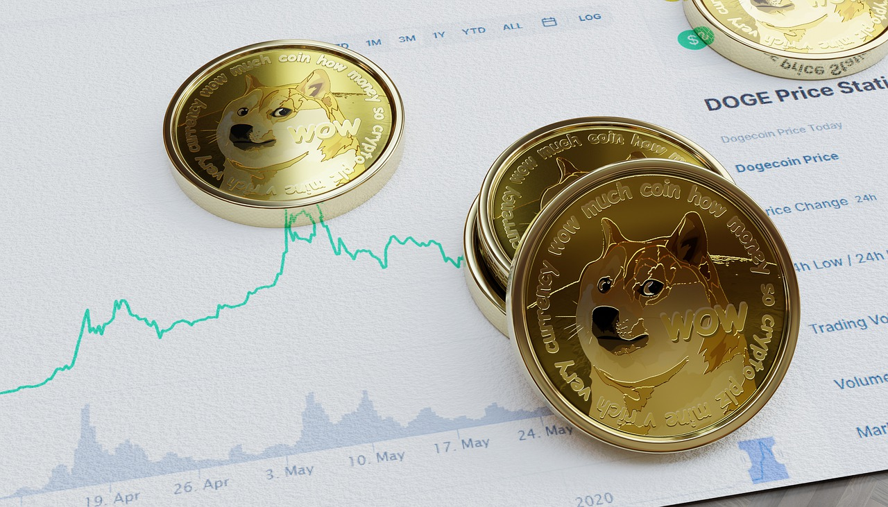
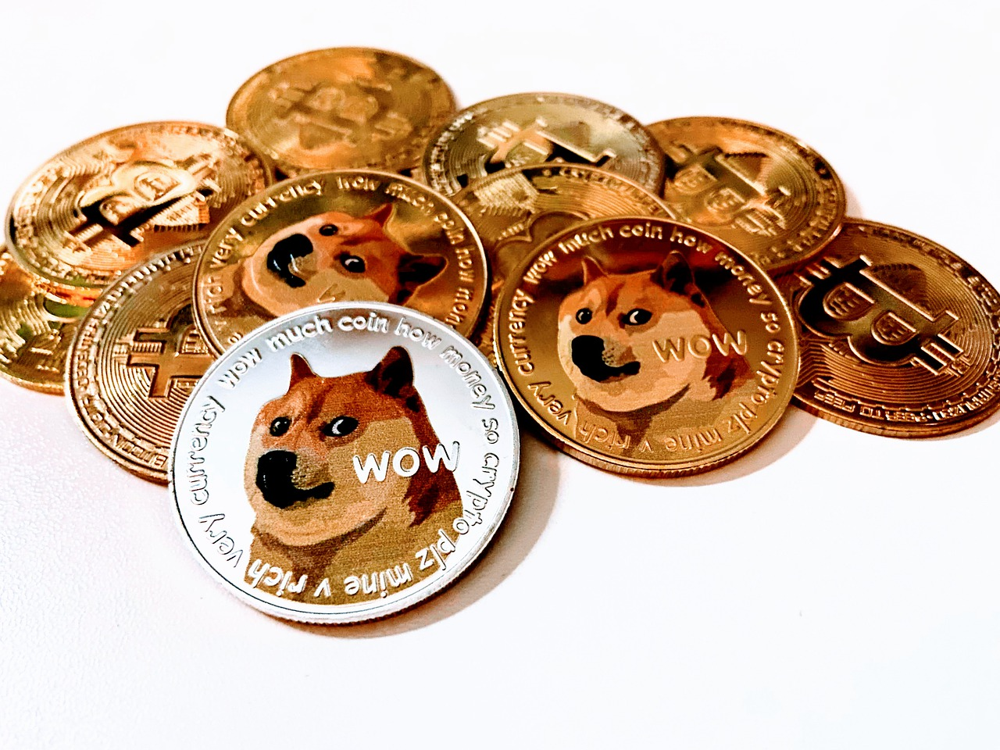

Dogecoin
Dogecoin is an open source peer-to-peer digital currency, favored by Shiba Inus worldwide.

What's with Dogecoin and the dog?

Dogecoin is fun and friendly internet currency created by software engineers Billy Markus and Jackson Palmer

Dogecoin sets itself apart from other digital currencies with an amazing community made up of vibrant folks just like you.

"Doge" is our friendly mascot! Shiba Inu is a Japanese breed that was popularized as an online meme and represents Dogecoin.
“The point is that Dogecoin was invented as a joke, essentially to make fun of cryptocurrency. Fate loves irony. What would be the most ironic outcome? The currency that started as a joke in fact becomes the real currency. To the moon."
Get Started! Choose your Wallet!
A Wallet is used for holding your Dogecoins directly on your computer or smartphone.
A Wallet is used for holding your Dogecoins directly on your computer or smartphone.